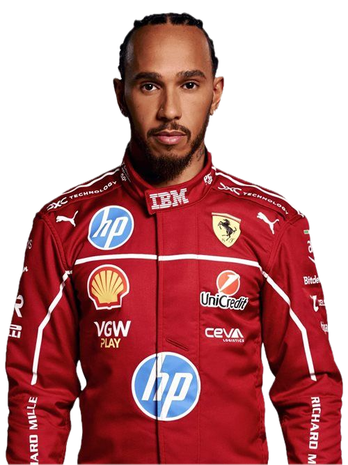

#1
Max Verstappen
Red Bull Racing
🇳🇱 Países Bajos
4
Campeonatos
62
Victorias
110
Podios
Considerado por muchos el mejor piloto de su generación. Ganó 4 campeonatos mundiales consecutivos
con Red Bull y rompió el récord de victorias en una sola temporada con 19 triunfos en 2023.

#16
Charles Leclerc
Scuderia Ferrari
🇲🇨 Mónaco
0
Campeonatos
8
Victorias
42
Podios
El monegasco es la apuesta de Ferrari para recuperar el campeonato. Conocido por sus pole positions
y su velocidad en clasificación, es uno de los pilotos más talentosos de la parrilla actual.

#4
Lando Norris
McLaren F1 Team
🇬🇧 Reino Unido
0
Campeonatos
4
Victorias
31
Podios
Con McLaren encontró un auto ganador y se convirtió en el principal rival de Verstappen en 2024. Se
espera que pelee por el campeonato en 2025 junto a su compañero Piastri.

#44
Lewis Hamilton
Scuderia Ferrari
🇬🇧 Reino Unido
7
Campeonatos
103
Victorias
201
Podios
El piloto más ganador de la historia de la F1. En 2025 hizo el gran salto a Ferrari buscando un
octavo campeonato que lo convertiría en el más grande de todos los tiempos.

#55
Carlos Sainz
Williams Racing
🇪🇸 España
0
Campeonatos
3
Victorias
24
Podios
Hijo del campeón de rally Carlos Sainz Sr., el español dejó Ferrari para unirse a Williams en 2025.
Es conocido por su consistencia y su capacidad de sacar el máximo de cualquier auto.